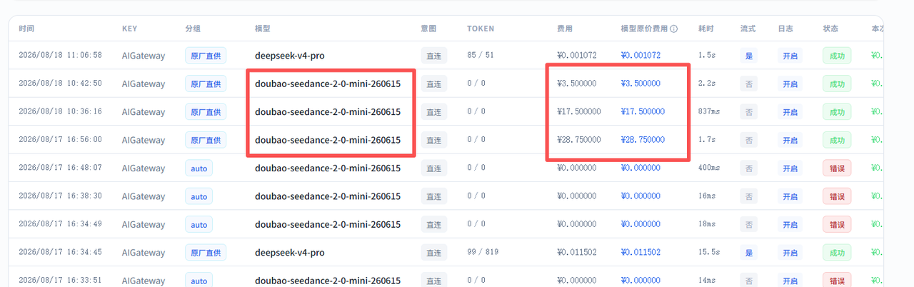
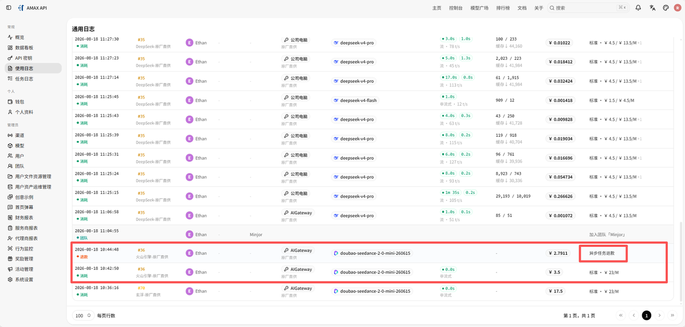
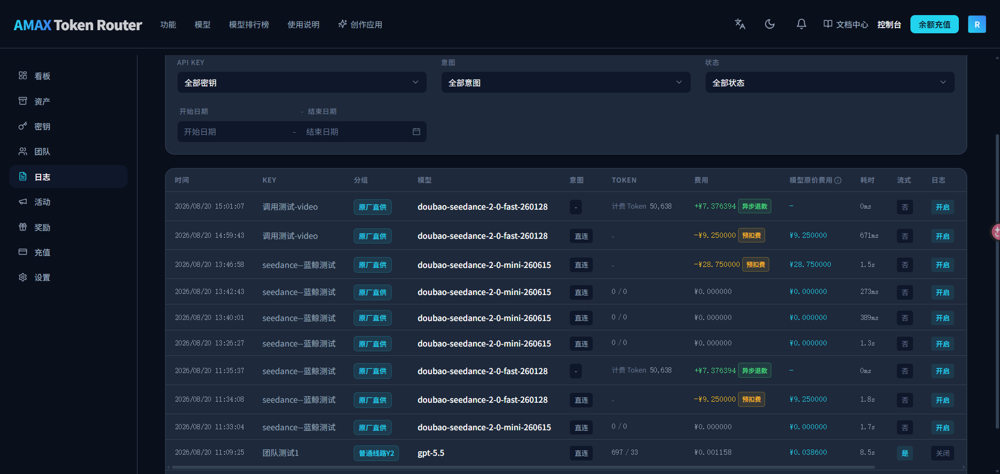

从“金额看不懂”到可核对：视频模型积分与异步计费链路治理
围绕视频生成的参数、分辨率定价、嵌套网关状态和异步退款日志，对
new-api、llm-router、amax-router三个项目进行端到端修复，让请求能够正确校验、正确计价、正确轮询，并让用户看懂预扣费、最终计费 Token 与退款流水。
目录
一、问题不是一个页面上的金额，而是一条异步链路
视频生成与普通文本请求最大的区别是：提交成功时任务通常尚未完成，平台只能按预计规格预扣额度，随后通过轮询获得最终状态和实际计费量，再进行补扣或退款。
Ctrl / ⌘ + 滚轮缩放，放大后可拖动查看
原问题横跨多个位置：渠道使用 duration/seconds、resolution/size 等不同字段；分辨率和参考视频会改变价格；new-api 嵌套调用时的 not_start/unknown 会被错误当成失败；用户前台只能看到预扣金额，日报还可能把预扣重复当成最终消费。
二、统一视频能力、参数与价格口径
1. 模型显式声明视频能力
模型元数据增加支持的视频分辨率和时长配置，并通过接口同步到 amax-router。创作页不再为所有视频模型展示一套写死规格，而是根据当前模型动态给出选项。
请求进入网关后会校验模型是否配置视频能力，未配置、缺少参数或使用不支持规格时直接返回明确错误，不再把无效请求继续发往上游。
2. 参数归一化
duration与seconds统一为标准秒数，并检测两者冲突。resolution与size统一为480P/720P/1080P/4K。- 兼容
1920x1080、竖屏尺寸、2160P、UHD等写法。 - 兼容
video、video_url、videos三种参考视频输入。 - remix/续作请求可从原任务计费快照继承时长和分辨率。
统一之后，渠道适配器、能力校验和计费模块都读取同一份规范化参数，减少“上游能生成但平台算错钱”的分支差异。
3. 分辨率与参考视频定价
视频价格拆分为“指定分辨率、无参考视频”和“指定分辨率、有参考视频”两个独立维度。专属价格未配置时回退到通用视频输入价格；一旦配置分辨率最终价格，就不再叠乘通用参考视频倍率，避免重复放大。
对于按 Token 计费的视频模型，定价接口同步补齐参考视频价格数据，使前端展示、预扣和最终结算使用一致的价格来源。旧系统只有“分辨率倍率 × 通用视频倍率”时继续按原规则回退，避免升级后价格突变。
三、修复嵌套网关的状态误判
级联网关场景中，上游 new-api 可能在任务尚未正式开始时返回 not_start，对外转换后又表现为 unknown。旧逻辑把无法识别的空状态当成终态失败，导致任务被提前退款或报错。
not_start与queued/submitted一样映射为排队中。- Sora/OpenAI 视频适配器收到级联上游
unknown时先按处理中保留，等待下一轮轮询。 - 真正无法解析的响应仍然失败，但错误信息会带上实际状态值并限制长度。
关键不是简单忽略 unknown，而是区分异步任务的暂态未知与响应结构确实异常，既避免误杀任务，也不掩盖真实故障。
四、打通预扣、退款与统计展示
修复前，客户端把视频请求的预扣金额直接展示为普通消费，用户会误以为这就是最终费用。

实际上，new-api 在任务完成后已经生成对应退款记录，但它没有普通请求的 request_id，因而被 llm-router 原有查询条件过滤。

llm-router 的日志口径随后完成针对性调整：
- 普通退款继续隐藏，仅额外放行
type=6且内容以token重算：开头的视频异步退款。 - 视频提交消费标记为
video_precharge，完成后的退款标记为async_refund。 - 从重算流水提取最终
tokens，作为视频实际计费 Token。 - 统计时消费额度按正数、退款按负数汇总；Token 重算无论补扣或退款只正向计入一次。
- 退款按实际发生日归集，避免跨天任务污染提交日统计。
amax-router 消费这些结构化字段：预扣费显示为负向金额和黄色标签，异步退款显示为正向金额和绿色标签，并单独展示最终计费 Token。实付、官方价与节省汇总同步使用正确方向。

五、技术取舍、验证与复盘
1. 技术取舍
- 不暴露所有退款：查询层只放行有明确视频重算语义的退款，维持原日志可见边界。
- 结构化计费语义：
llm-router识别billing_type和billed_tokens，前端不依赖中文日志内容猜测类型。 - 兼容旧定价：新旧分辨率与参考视频配置并存，避免配置升级导致价格突变。
2. 验证结果
实现补充了视频状态映射、未知状态处理、轮询失败原因、模型能力和日志查询等回归测试，并对预扣、异步退款、最终 Token、今日消费与跨天统计进行了页面核对。
最终形成三个闭环：请求规格在进入渠道前正确校验；分辨率、参考视频、预扣和实际结算口径一致；用户能够看到预扣、退款、实际 Token 和正确消费汇总。
这次问题最初看起来只是“前端少了一个退款标签”，根因却分散在参数协议、计费配置、异步状态机、日志筛选和汇总口径中。真正有效的修复必须沿调用链逐层核对事实来源，而不是在页面上硬编码一个正负号。
六、简历可用表述
主导视频模型异步计费链路治理，联动 new-api、llm-router、amax-router 修复参数规格、分辨率/参考视频定价、级联网关状态误判及预扣退款展示问题，实现“预扣—轮询—实际 Token 结算—退款—用户对账”闭环。
技术关键词：异步任务状态机、预扣与结算、级联网关、协议归一化、价格回退、日志事实表、跨天统计、端到端排障。